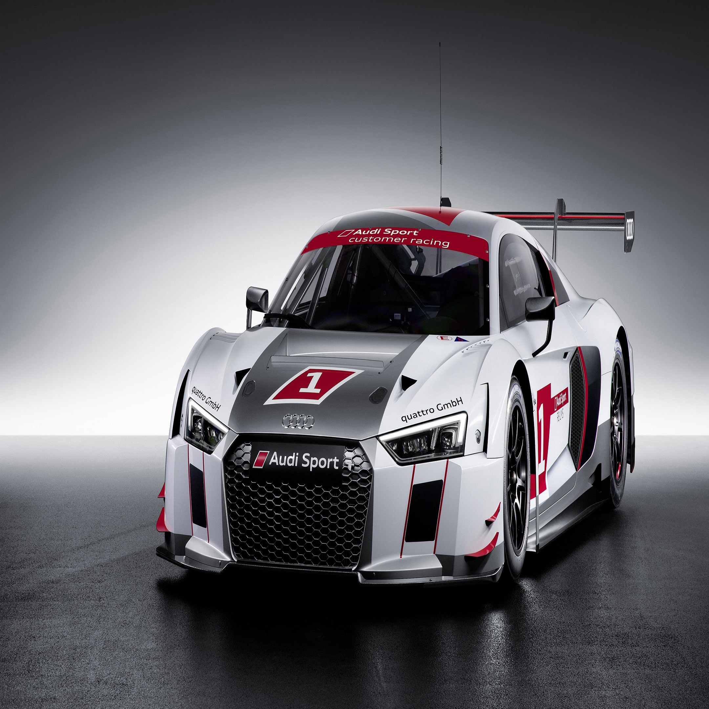

Bilgiye ulaşmanın hem çok kolay hem de çok zor
olduğu şu son zamanlarda, insanların bilgi ihtiyacını
karşılamak için ille de basılı kaynaklara yönelmelerini
beklemek oldukça yanlış bir düşünce biçimidir.
Bilgi patlaması teriminin tam anlamıyla karşıladığı bu bilgi çokluğu
içerisindeki karmaşa, bilgiye olan talebin büyüklüğünü anlatmakla beraber; doğru bilgiye ulaşmanın zorluğunu
da belirtmiş oluyor.
Günlük hayatta yapmış olduğumuz gazete, kitap, magazin
okuma, radyo dinleme, televizyon ya da film izleme, bilgisayar
kullanma gibi hareketler bilgiye ulaşmak için kullandığımız yollardır.
Her şeyin bu kadar çok ve çabuk değişti bir zaman diliminde, bilgiye ulaşmak
için en önemli araçlardan birisi olarak tanımladığımız, bilgiye dayalı belgenin ham maddesi metinin ulaşım
ve kullanım yollarının değişmemesini beklemek eksik bir düşüncedir.
İnternet üzerindeki bilginin kolay ulaşımlı ve esnek bir bağlantı
paylaşımını sağlamak olarak tanımlayabileceğimiz hypertext kelimesi yazılı
metnin eski lineer kısıtlarının aşılması anlamına gelir.
Mobil
%20
Masaüstü
%5
Web
%45
Eğitim
%10
Grafik
%5
Diğer
%15
Title
Text
Title
Text
Title
Text
Title
Text